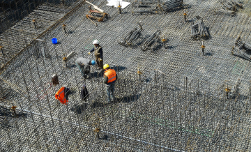

Have any questions? Contact us!
BIM Outsourcing vs in-House Teams: How to Make Use of Pros and Avoid Cons

Every AEC professional can relate to the situation when a client decides to update the structural plans and specs mid-project for one reason or another. This entails updating many blueprints and documentation, and usually comes with tight deadlines. BIM offers one solution to the problem. When it’s fully implemented, AEC professionals can update all the necessary models at once, instead of going through every single blueprint.
However, in our work at Powerkh, we see many construction companies struggling to implement BIM, as the initial stages require a significant amount of effort, time, and resource investment. BIM outsourcing seems to be the answer, but many stakeholders fear a “loss of control”, worry about miscommunication issues, or simply fear choosing the wrong contractor.
In reality, outsourcing BIM tasks can be a good move. Outsourcing gives you instant access to skilled talent and enables you to engage in more complex projects, allowing your business to grow and succeed.
But don’t just take our word for it. If you’re still on the fence about whether outsourcing could be for you, here’s a rundown of the advantages of BIM outsourcing and a realistic look at the risks of BIM outsourcing vs the in-house approach.
Using an in-house BIM team
An in-house team is the most logical and straightforward approach to BIM used by many companies. “We need this capability, let’s hire an in-house team to deliver it!” In-house employees create a feeling of control; you can ensure their full commitment and quality of work. What’s more, with an in-house solution the expertise stays within the company.
This all seems well and good, until the difficult questions begin to arise:
- Who will source, interview, and hire your team? You need to pay in-house or external recruiters while they look for the specialists — and the process might take up to 6 months or more.
- Which candidates are good? If you’re putting a BIM team together from scratch, you may not be able to evaluate applicants' skills to ensure you hire reliable talent.
- What if there’s no one in your area? There’s quite possibly a shortage of unemployed BIM specialists in your area. Let’s be frank: the good ones are happily employed, so you need to headhunt and acquire talent from your competitors.
- Which software should you use? There’s a huge range of software encompassing different BIM processes such as AutoCAD, Dynamo, Revit and SketchUp, Navisworks, Inventor, etc so mastering just one tool doesn’t mean you’ve mastered BIM. You also need to ensure that the people you hire can work with the software that suits your business objectives best and integrates with the rest of your tool kit well.
- Who will bring the team together? Hiring good talent is hard enough. Making a productive team out of them is even harder. You will need to invest a lot of personal or HR effort until your team is ready to rock.
- What will the CAPEX and OPEX be? Once your team is hired, you need to purchase the hardware and software licenses required for work.
- How much time and growth opportunities are you losing? You will likely lose money due to unfulfilled contracts and missed deadlines until you accumulate solid in-house BIM expertise, and this takes time.
- How safe is your knowledge investment? Your employees can leave for a higher paycheck anytime, taking their knowledge with them.
These are just some of the questions you’ll likely have to deal with even before your in-house BIM team is up and running. Now let’s take a look at the pros and cons of managing an active in-house BIM team.
Advantages of in-house BIM
- You have full control of 140-160 man-hours a month per employee.
- You can see and manage project progress directly and can adjust the workflows to meet deadlines.
- The expertise gained remains within the team (until someone leaves).
Disadvantages of in-house BIM
- You have to pay the team members for 140+ man/hours monthly, even if there is nothing to do. Also, the cost of software licences is at least $5000 annually.
- You have to maintain an on-premises server farm to support rendering and simulations processing quickly enough, which means more CAPEX on equipment and OPEX on IT department salaries unless you’re fully in the cloud.
- You will need to complete quite a few projects before the team irons out all the bumps in workflows and begins working at full capacity.
Despite the challenges and disadvantages, many companies think that an in-house team is the only way to implement BIM. What’s more, based on our experience at Powerkh, stakeholders believe that such investments are only possible for big AEC businesses, so small businesses are left without an option.
But what if reliable BIM outsourcing allowed you to address these challenges — or even did away with them altogether?
BIM Modeling Services
Looking for a way to improve your design and manage your construction effectively? Powerkh - a trusted BIM & VDC services provider with extensive engineering experience and a portfolio of 200+ successful BIM & VDC projects.
Read moreWorking with an outsourced BIM team
Here’s a look at how working with a BIM outsourcing service provider helps you handle or completely avoid the challenges listed above, one-on-one.
- High team member skill level. A BIM outsourcing service provider will invest in improving their employees' skills and certify them appropriately to кeep them relevant and competitive.
- Access to a global talent pool. Instead of looking for unemployed BIM experts locally or headhunting them from your competitors, you get instant access to a vast pool of skilled BIM specialists.
- Broad toolset expertise. Outsourced teams usually have a working knowledge of many BIM tools. Most importantly, they’ll be able to recommend the best tool kit to solve the challenges of your particular project and integrate it with your existing software ecosystem.
- A turnkey team with polished workflows. The team is pre-formed and ready to start working on your project from day one.
- Ensured project continuity. Hiring new talent or replacing existing members is not your headache. The BIM service provider is under contractual obligation to deliver the results on time.
- No CAPEX, payroll package, or software licensing concerns. The provider takes care of the office space and the hardware and software licenses needed for your team to work. It also handles medical coverage and operational overheads.
- No time lost, and an instant services upgrade. A reliable BIM provider and a signed contract guarantee you get value from day one and don’t miss out on business opportunities due to lack of skills.
- Guaranteed delivery of results. If a team member falls ill, goes on vacation, or quits, it’s the service provider’s responsibility to replace them, so still, you get all the project deliverables and documentation on time.
As you can see, there are multiple positive aspects of working with a reliable technology partner even before your project is running.
But that’s not all!
Let's now look at some specific BIM outsourcing pros — all the good things you get with this way of working.
Advantages of BIM outsourcing
- You pay only for the time the team actually spends working on your project, not for idle standby. This results in significant cost reduction, as compared to running an in-house BIM team.
- One-time project or long-term partnership? You choose. With outsourcing, you select the approach based on how satisfied you are with the outcomes. If you find a reliable BIM outsourcing partner, you’ve gained a significant advantage over your competitors.
- The service provider handles all the project management issues, and you are kept updated with regular reports through your preferred communication channels. This lets you keep your finger on the pulse of the project without investing too much time and effort.
- A BIM service provider’s expertise will help automate repetitive tasks, bringing down project delivery time and costs.
- The service provider prepares detailed project documentation to help your team use the deliverables produced (point cloud to 3D models/2D drawings, BIM content, BIM automation, etc.). All the IP rights on the project results belong to you under NDA and SLA.
- If, despite everything, you’re dissatisfied with the project results and wish to move on, this is much easier to do than with an in-house team.
Our Case Studies
Disadvantages of BIM outsourcing
- You have little control over who works on your project. The BIM outsourcing company assigns the team for every project and handles any replacements.
- There can be communication challenges if your service provider’s working hours don’t overlap with yours. However, this can be turned into an advantage in some cases, as you can get many tasks done overnight.
- There’s also a risk that a vendor will be unreliable. You can mitigate this to some extent by asking for references from previous customers to support the claims the company makes. Look for case studies that showcase the team’s expertise, online reviews, and ratings on niche platforms, etc.
The key thing to remember is that just as your reputation is valuable to you in the AEC business, so a reliable BIM service provider will strive to maintain and acquire good references. Therefore, when you find a competent BIM outsourcing company, both parties can benefit from long-term cooperation.
Never miss a new blog post from us!
Why to outsource BIM services to Powerkh?
We have a solid reputation as a BIM and VDC solutions provider operating in 11 countries. Since our creation in 2016, we’ve completed more than 200 state-of-the-art projects in BIM, VDC, structural detailing, computational design automation, digital fabrication, and more. With an NPS of 91, we are able to provide references from satisfied customers, many of whom have become long-term partners. Our particular areas of expertise include:
BIM modeling and documentation
- Building 3D models from provided 2D drawings in.dwg and other formats
- Model rendering for presentation needs
- Documentation support for the coordinated drawings
- Improving the level of development and detail (from LOD 200 to LOD 300 or 350)
BIM coordination for clash detection and resolution
- Coordinating different models in MEP/ARC/STR formats and resolving clashes
- Linking and updating the models simultaneously to accommodate and propagate third-party changes
- Model updates and rearrangements to improve workflow efficiency through the automation of routine design processes
BIM for construction prefabrication and fabrication
- Developing input for Computer Numerical Construction
- Scan to BIM (building models based on point cloud data)
- Boosting productivity up to 50% by coupling factory-based prefabrication with on-site construction work
We’re passionate about what we do, which is using digital design tools to improve the way the buildings and structures are designed, built, and run.
Takeaway: BIM outsourcing is a viable choice
The main idea when considering BIM outsourcing vs in-house team is that it’s better to work with remote experts rather than have no expertise on-site or suffer the growing pains of starting your own team. Throughout the course of this article, we’ve shown numerous advantages of BIM outsourcing and how it helps overcome the shortcomings of in-house BIM.
Hopefully, you can now see the benefits of working with a dedicated BIM team — from cost savings up to instant access to necessary skills. Outsourcing companies have a more broad BIM modeling expertise, so collaboration between outsourced specialists and your in-house team leads to synergy and great collaboration.
The only question that should remain is how to find a reliable BIM solutions provider to become more competitive, take on more projects, and grow fast. At Powerkh, we’re happy to be the answer. We’ll gladly address any questions you have regarding our BIM services and successfully accomplished projects. Just contact us for a consultation to get the ball rolling, and let’s discuss how we can help you reach your business goals!
BIM Modeling Services
Have a BIM Project? Talk To Us.
-
Enhancing Productivity in BIM Projects: Best Tips & Strategies
Yevhen Surzhan
Tetiana Rapina

-
Boosting productivity for Scan to BIM Projects
Yevhen Surzhan
Tetiana Rapina

-
7 Benefits of BIM Services in Construction
Kostya Rapina

-
How BIM Works
Yevhen Surzhan

-
The Benefits of Using Laser Scanning in Construction You Can’t Miss
Kostya Rapina

-
Top 30 Architectural Rendering Companies
Tetiana Rapina

-
Choosing Best BIM Software for Your Project in 2021
Yevhen Surzhan

-
As-Built Drawings 101: All You Need to Know
Kostya Rapina

-
BIM Outsourcing vs in-House Teams
Kostya Rapina

-
Introduction to Virtual Design and Construction
Yevhen Surzhan

-
Construction RFI: Template, Best Practices
Kostya Rapina
-
How to Hire a BIM Team
Yevhen Surzhan
